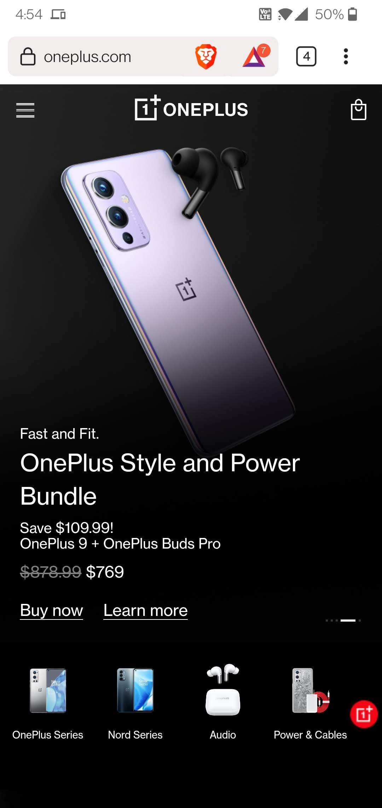
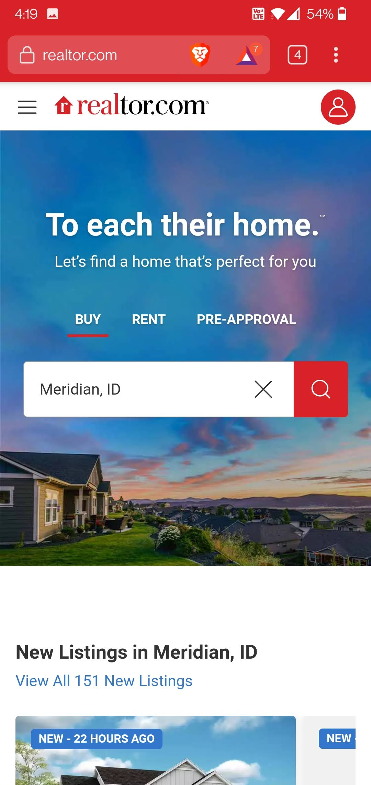
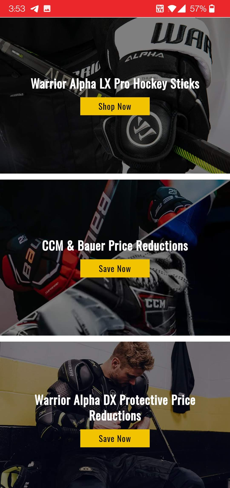

Visual Hierarchy
OnePlus
oneplus.com The OnePlus website does a great job of prominently displaying stunning pictures at the top of the home page. The picture stands out against the rest of the screen and immediately grabs your attention. A more detailed description sits below the picture and it creates a natural path for our eyes to follow down to the price and additional products below.
Rule of Thirds
Realtor
realtor.com Specifically the main image on the screen follows the rule of thirds. The top third of the image has text, the middle third has a text box to enter your location, and the bottom third reveals the most interesting part of the whole image. There is also a good use of white or empty space on the main image above the text and below the image, separating it from the rest of the page.
Repetition
Repetition
hockeymonkey.com If you scroll down just a tad on the Hockey Monkey site we find product offering images that are all designed exactly the same way (one has a split image). We have a background image, white text explaining what the product is, and a yellow call to action button. Each box is the same size and has the same filters applied to the image so they look very similar to each other. This design is repeated throughout the site.